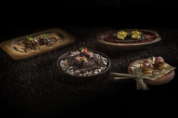
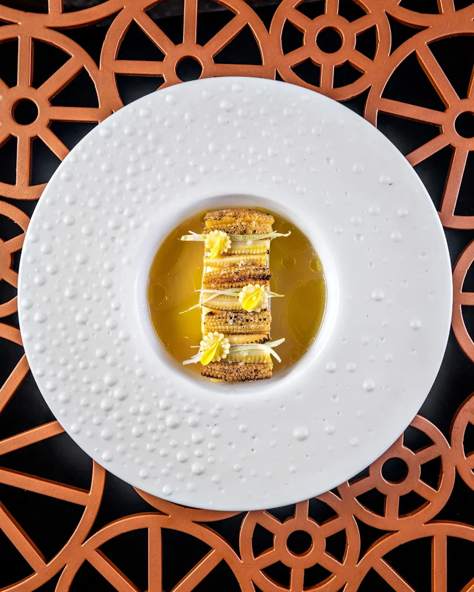
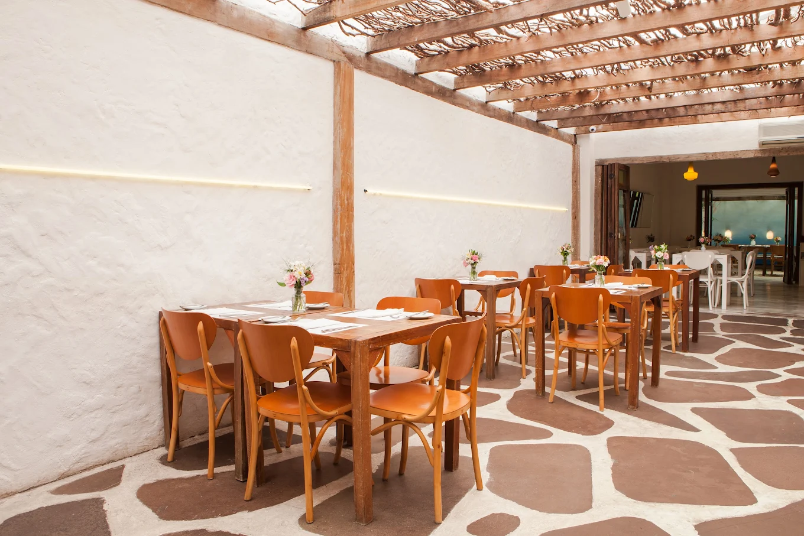
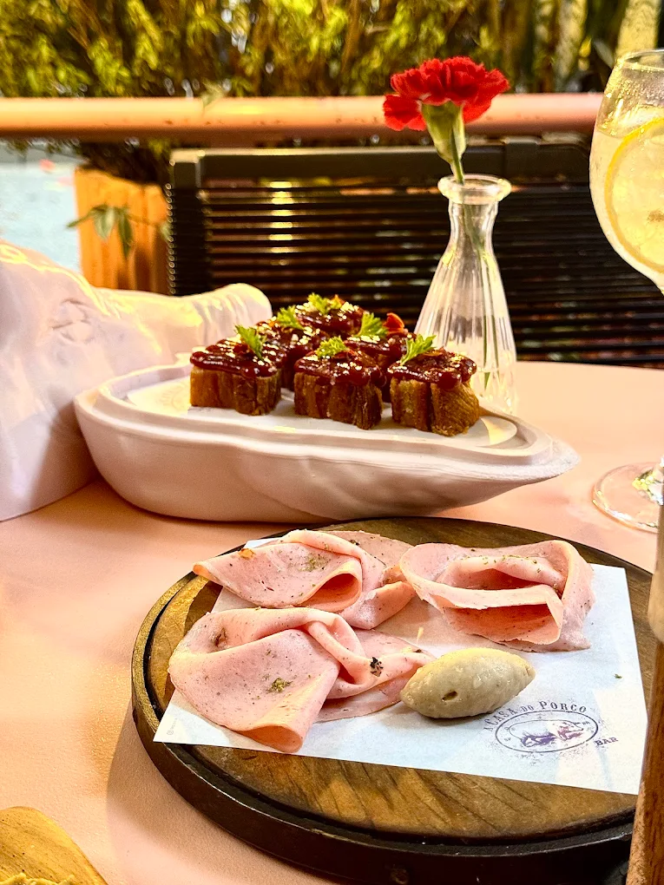
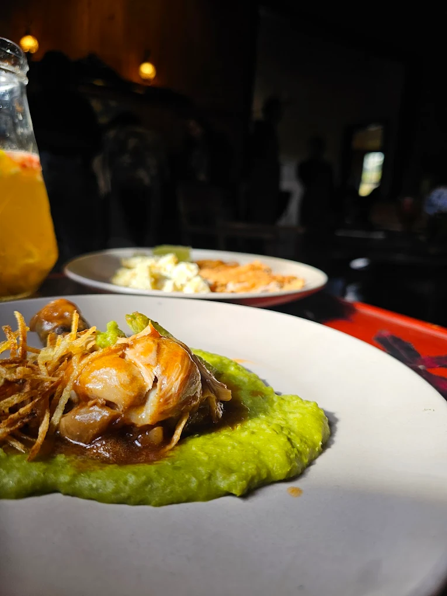
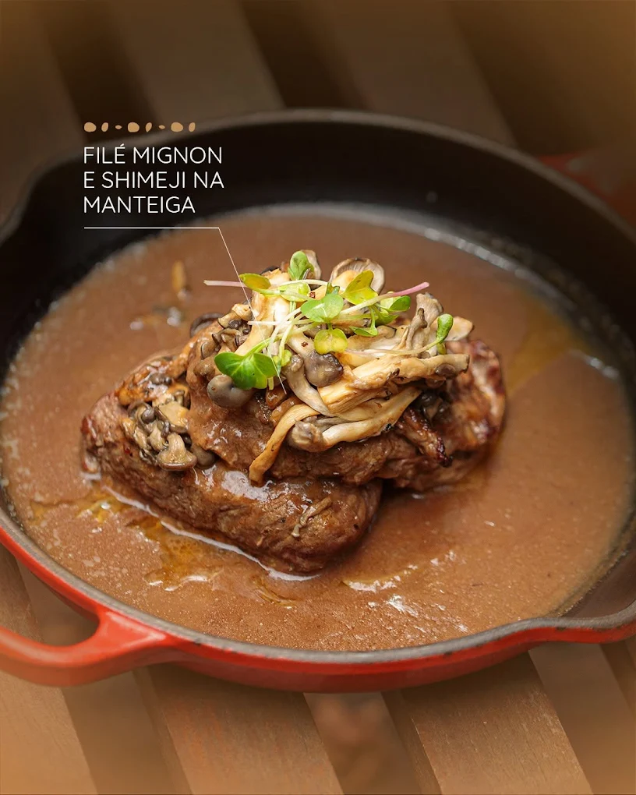

-

1. D.O.M. - São Paulo (SP)
Chef Alex Atala transforma ingredientes brasileiros em arte culinária. Um dos mais premiados do país.
Fazer Reserva -

2. Oro - Rio de Janeiro (RJ)
Comandado por Felipe Bronze, o Oro é uma experiência sensorial completa, com menu degustação surpreendente.
Fazer Reserva -

3. Maní - São Paulo (SP)
Helena Rizzo oferece pratos criativos com toques brasileiros e internacionais em ambiente acolhedor.
Fazer Reserva -

4. A Casa do Porco Bar - São Paulo
A Casa do Porco serve pratos de porco caipira criados pelo chef Jefferson Rueda.
Fazer Reserva -
5. Mocotó - São Paulo (SP)
Comida sertaneja autêntica e moderna. Um ícone da gastronomia nordestina em São Paulo.
Fazer Reserva -
6. Fasano - São Paulo (SP)
Luxuoso e tradicional, o Fasano é referência em culinária italiana sofisticada no Brasil.
Fazer Reserva -
7. Aprazível - Rio de Janeiro (RJ)
Localizado em Santa Teresa, o Aprazível combina vista deslumbrante com pratos regionais autorais.
Fazer Reserva -

8. Parador Hampel - São Francisco de Paula (RS)
Gastronomia gaúcha reinventada, rodeada de natureza exuberante na Serra Gaúcha.
Fazer Reserva -

9. Banzeiro - Manaus (AM)
Pratos com peixes amazônicos e ingredientes da floresta, valorizando a culinária regional.
Fazer Reserva -
10. Origem - Salvador (BA)
Menu degustação criativo e contemporâneo inspirado nos sabores da Bahia e do Brasil.
Fazer Reserva